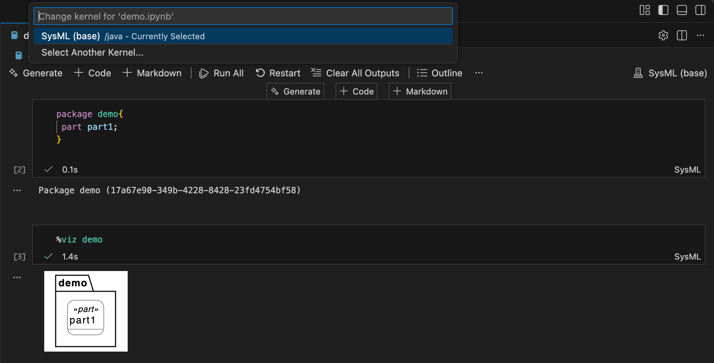

SysML v2 Kernel & Syside Setup
SysMLv2 is rapidly establishing itself as the next-generation modeling language for systems engineering. One of the most convenient ways to explore the SysMLv2 Pilot Implementation is to use it interactively inside JupyterNotebooks or JupyterLab via the SysMLv2 Jupyter Kernel. This kernel allows you to execute SysML textual notation directly in notebook cells, run magic commands, query local repositories, and interact with the SysML API server.
This guide describes a reliable, working method to install the most recent SysMLv2 Jupyter Kernel on macOS, using:
- Homebrew
- Miniconda with conda-forge
- jenv for Java version management
- JupyterLab / Notebook
What is a Kernel?
A kernel is a program that runs and interprets code in a specific programming language within an interactive computing environment, such as Jupyter Notebooks or JupyterLab. It acts as a bridge between the user interface and the underlying execution environment, allowing users to write and execute code in a particular language. Additionally, kernels can provide features like magic commands.
Prerequisites
Install Homebrew
If you haven’t already installed Homebrew, you can do so by running the following command in your terminal:
Install git
If you haven’t already installed git, you can do so using Homebrew. Git is used to clone the SysML v2 Release repository.
Install Miniconda
We use Miniconda as a lightweight package manager to manage our Python environment. Install Miniconda using Homebrew:
Install jenv (Java Version Manager)
We use jenv to manage Java versions. Install jenv using Homebrew:
Install & Activate Java
The current SysMLv2 Kernel requires Java 21. The SysML v2 Release defines the required Java version as 21 under the Install Section
Install Java 21
Install Java 21 using homebrew:
Add Java 21 to jenv
Add the installed Java version to jenv:
1jenv add /opt/homebrew/opt/openjdk@21- 1
- Adjust the path if necessary, depending on your Homebrew installation location.
Activate Java 21 globally
Set Java 21 as the global Java version:
The expected output should indicate that Java 21 is active.
Install JupyterLab
If JupyterLab is not already installed, you can install it using conda:
Install SysMLv2 Kernel
The installation process is defined by the SysML v2 Release.
Clone the SysML v2 Release Repository
Before installing the kernel, you need to clone the SysML v2 Release repository. This repository contains the Jupyter integration scripts, examples, and the SysML textual tooling.
First, navigate to your desired installation directory and clone the repository:
1cd PATH
git clone https://github.com/Systems-Modeling/SysML-v2-Release- 1
-
Replace
PATHwith your desired installation directory.
Install the SysMLv2 Jupyter Kernel
Navigate to the Jupyter installation directory within the cloned repository and run the installation script:
Ensure Kernel Registration
Running the installation script places the SysMLv2 Jupyter kernel on your system, but it’s important to verify that Jupyter actually recognizes it. The kernel must be correctly registered so Jupyter knows how to launch the SysML engine, where the Java runtime is located, and which classpath to use.
If the SysML kernel does not appear, or if you notice that the kernelspec path points to a stale directory (e.g., a conda cache), you can refresh the registration by reinstalling the Jupyter integration layer:
This step does not replace the SysML v2 kernel you cloned earlier. Instead, it ensures that Jupyter’s kernel registry is in a clean and consistent state so the SysML kernel starts reliably.
Integrate SysMLv2 Kernel with VSCode (Syside)
The kernel can be used within JupyterLab or Jupyter Notebooks. However, I would recommend using VSCode with the Syside Extension for a more integrated SysMLv2 modeling experience.
To use the SysMLv2 Kernel within VSCode, ensure you have the Jupyter Extension installed. This extension allows you to run Jupyter notebooks directly in VSCode. The SysMLv2 Kernel should automatically appear as an option when you create or open a Jupyter notebook.
